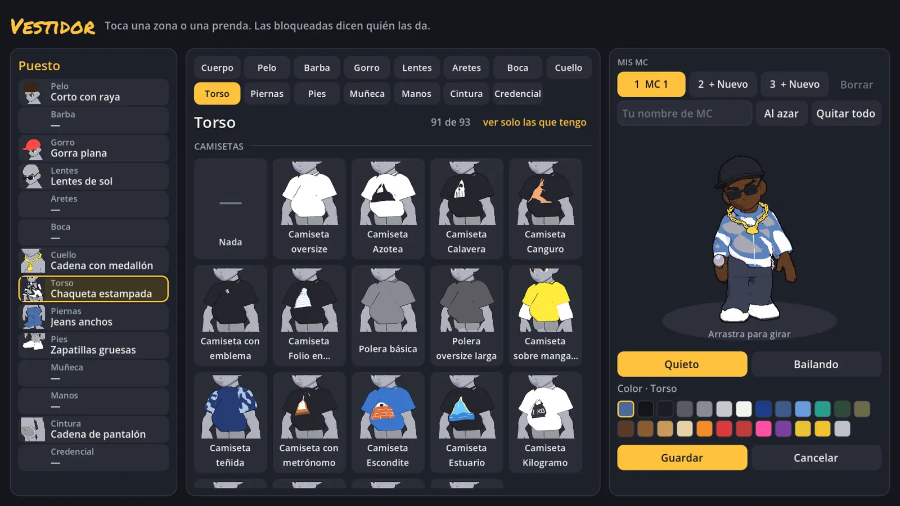
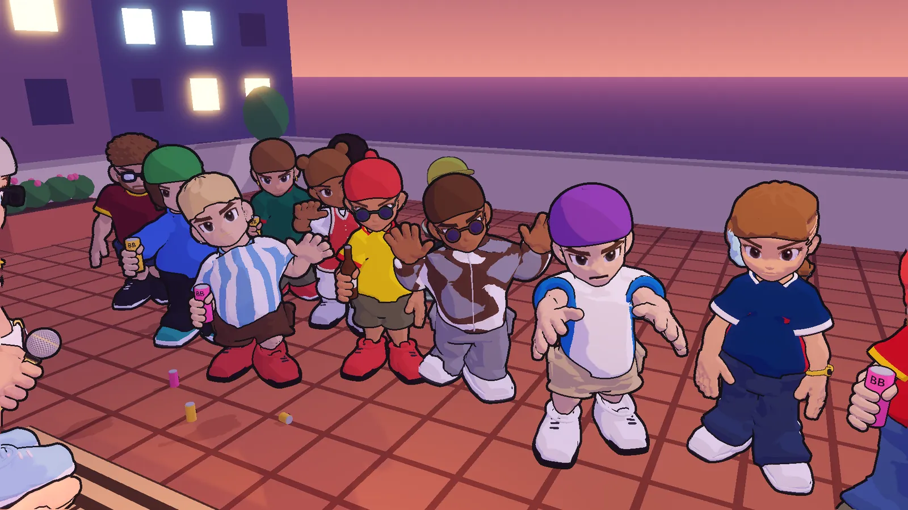

Libre
Rimas sobre lo que quieras. Ataca, responde y remata.

Freestyle Simulator
Batalla de gallos contra la máquina: tú rapeas, el rival te responde y el público decide.
Nada de cartas ni opciones para elegir. Abres el micrófono, rimas sobre el beat y el rival te contesta a lo que dijiste. Si prefieres, también puedes escribir tus barras.
Elige rival, escenario, beat y formato. Cada rival tiene su estilo y su punto débil.
Entra con su flow, sus muletillas y su voz, a tiempo con el beat.
Seis entradas de cuatro barras por lado, alternadas. Cuentan la rima, el tiempo, la respuesta y el ingenio.
El público reacciona en vivo y tres jueces votan. Si el jurado no se define, hay réplica: cuatro entradas más por lado.
El host la presenta, los MC se miran a la cara, el rival tira su entrada y tres jueces deciden.
Empiezas rapeando en la calle y con reputación te ganas tarimas cada vez más grandes. Cada escenario tiene su público, su host y su DJ, y su nombre cambia según tu país: el autobús es micro, colectivo, camión o guagua.
Capturas del juego en desarrollo. Todo puede cambiar antes del lanzamiento.
Elige dos rivales, el escenario, el beat y el tono, y mira cómo se miden entre ellos. Espinas, un streamer de la escena, comenta la batalla en vivo desde su ventanita, con un chat que no para.
En el chat cada país apoya a su compatriota, y al final Espinas se despide con el resultado.
Carniceros de sangre, ingenieros del punchline, estructuradores, musicales, chistosos y puristas del under. Cada rival tiene su personalidad, sus muletillas, su prenda propia y una voz con su acento: chileno, español, mexicano, rioplatense o caribeño.
Van de la categoría E a la S. Cada categoría se abre al vencer a la mitad de los rivales de la anterior, así que a la S no se llega repitiendo al mismo.
En cada escenario hay un host distinto, cinco DJ se reparten las tornamesas y un jurado de tres que, en las tarimas más grandes, cede la mesa a tres invitados.
Tu MC puede ser de cualquiera de los 20 países, y el juego se adapta: el nombre de los escenarios, la bandera, la voz y la forma de hablar.

236 prendas entre gorras, polerones, chaquetas, cadenas, lentes y zapatillas, con colores para teñir. Elige cuerpo, pelo, barba, piel y país.
Partes con lo básico y el resto se gana. Cada rival que vences te entrega su prenda propia, y los jueces, hosts y DJ también tienen las suyas.
50 instrumentales propios en 15 estilos, con el tiempo exacto para que cada barra caiga en el pulso. Escucha algunos:
Familiar: sin groserías, y el jurado las castiga.
Adultos: groserías y ataques duros, como en la calle.
Sin filtro (+18): un interruptor aparte dentro de Adultos, que viene apagado.
El ambiente sigue al tono: en Familiar el público toma energéticas y en Adultos aparece la cerveza.

Rimas sobre lo que quieras. Ataca, responde y remata.
Un tema para toda la batalla, y hay que respetarlo.
Una palabra obligatoria por entrada, y tiene que ir rimando.
En los beats de doble tempo, estrofas en cadena con rimas internas en la misma terminación.
Si el jurado no se define, cuatro entradas más por lado, y ahí se decide sí o sí.
El rival piensa, rapea y canta en tu PC. Sin suscripción y sin pagar por batalla.
Al 24 de noviembre de 2026.
Un correo cuando haya prueba abierta y otro el día del lanzamiento. Nada más, y te puedes dar de baja cuando quieras.